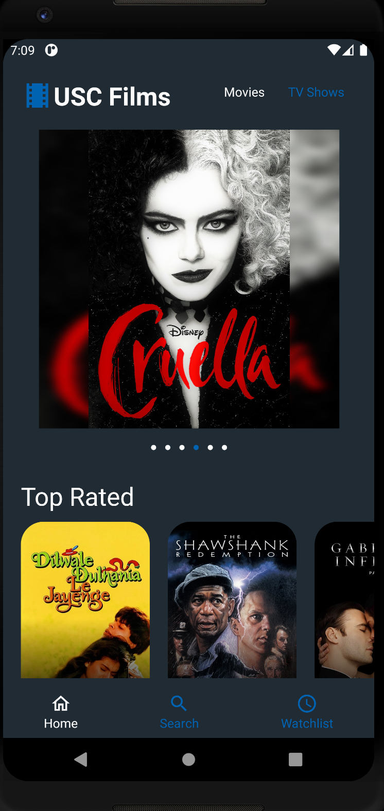
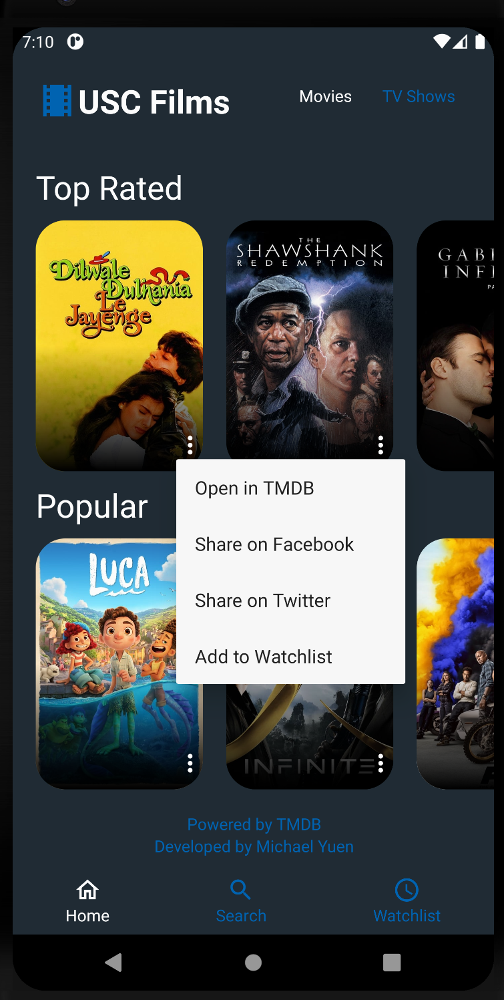
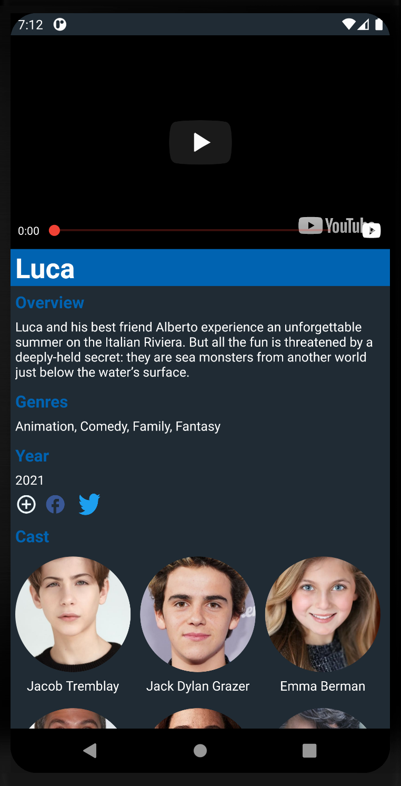
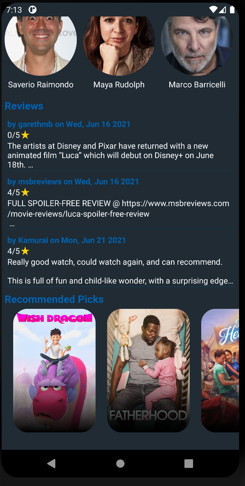
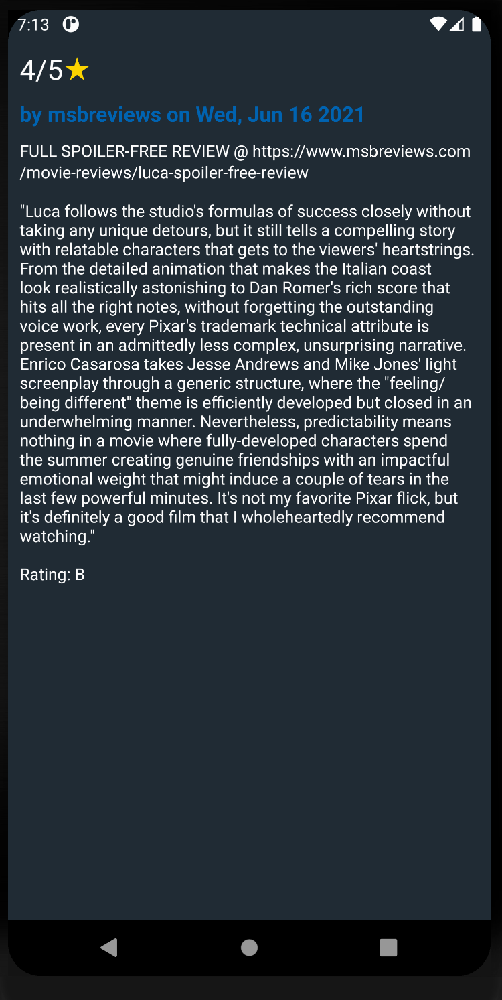
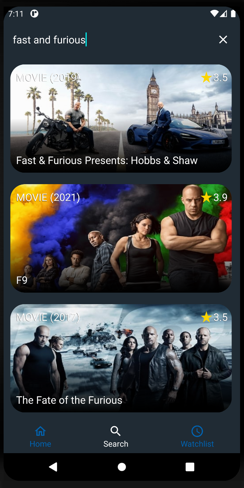
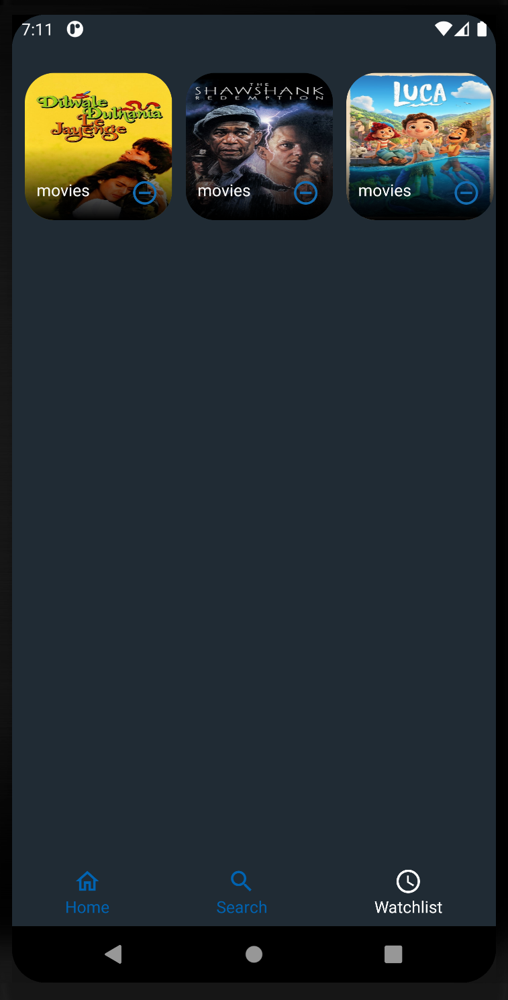
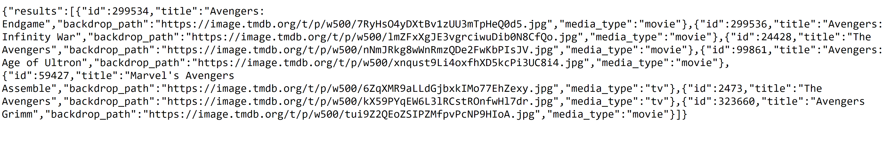
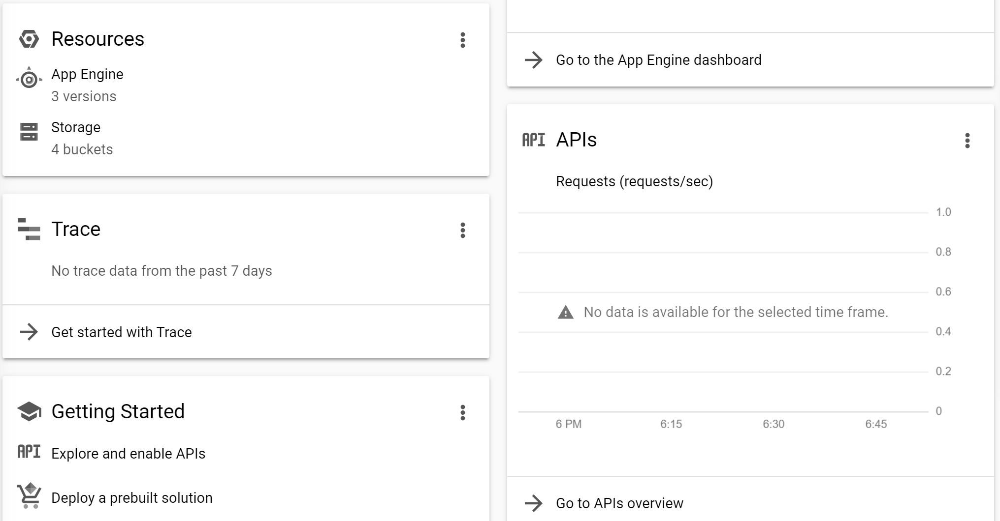

Movie Details: Android
This application is designed for users to be able to view a movie's details through The Movie Database, showcasing details, cast, reviews, and more backend data of a particular movie or TV show through Android devices. The application design maintained a frontend and backend despite the fact that it isn't a website: the same principles of load balancing and shooting the HTTP requests from the backend is cleaner and better practice. The choice of using standard Java and Android Studio is simply because Java is better documented than recent languages. The application is built on Fragments, separating parts of the application into clean modules. The backend has dynamic content served through the HTTP requests reaching TMDB's APIs and pulling JSON through the Nodejs and Express proxy server for the application.

Home Fragment
The home fragment holds a carousel of the top six movies or TV shows, allowing for easy access to recent movies and TV shows. A switch above allows for easy change between movie or TV show focus. Each movie in the carousel is touchable, allowing for smooth transitions to the details of the movie shown.
All of the data seen here is pulled from the backend, which is a separate proxy server written in Nodejs and Express. The frontend receives the JSON responses from the backend server, which in turn receives responses for the HTTP requests sent by opening the server. The images are then populated and formatted using Glide, with the effects and carousel created from some Android xml features. The overall frontend details are all formed by different xml properties and Java.

Home Fragment Continued
The home fragment contains a number of carousels that have multiple cards on each one. Each card contains a button that triggers a particular set of actions allowed by the user, including opening a link to the TMDB source, sharing the movie or TV show on facebook or twitter, or adding the movie or TV show to the watchlist through saving it on Android's local storage.
The bottom of the fragment contains a slider that allows the user to switch between the home, search, and watchlist Fragments. The Android application is built in Fragments to allow for modularization of both the frontend UI and the functionality created within Java. The footer is created with a link to the TMDB API, which the Android application sends HTTP requests to and receives JSON responses in the backend, which are then pulled in the frontend through Java.

Details Fragment
Upon touching a movie or TV show shown, an HTTP Request is sent to the TMDB API, the proxy server pulls the JSON to the frontend and shows the details in this fragment. This proxy server and backend is used instead of pulling the JSON directly from the frontend in order to enact load balancing, make the code modular and separate based on function, and practice different mechanics in web technology.
The details contain a multitude of features, including the title, description, rating, release or air date, genres, a trailer which is propagated through a Youtube player downloaded from Google's different Android packages, share features forming a link to facebook or twitter sharing the movie or TV show, and a watchlist feature allowing for adding wanted movies and TV shows to the watchlist.

Details Fragment Continued
The cast, reviews, and recommendations are also pulled up from the particular movie. Each cast member is shown within a card system showing each individual image and cast member's name, using Glide to create the circular borders. The reviews are all pulled up to have ratings, authors, date written, and descriptions with only three lines, allowing expanding upon clicking to a Review Fragment. Lastly, the recommended picks all lead to another Details Fragment pop up of that movie or TV show.
This section is mostly focused on frontend development and creating a better user interface for the user, as the proxy server's functionality is already done with the detail fragment pulling and the carousels in the home fragment. Everything further is just added fluff and details showing the inner workings of the movie or TV show pulled from the proxy server.

Reviews Fragment
The user can also see the recent reviews of the search results. The section focuses on creating containers for the reviews. The reviews each contain their individual authors, date of writing, description up to a certain length, and overall rating given by the author.
A key note of this feature is that the review is already pulled in the HTTP request during the details fragment creation. The review fragment is only pushed through the frontend as a feed-forward data addition. All of the data is already pulled from the backend, which then is pulled from the Details Fragment to fill in the gaps. Although the previous description is shortened, the entire description is kept for this Fragment. This showcases a need for Fragments, as data can be kept and transfered in the Android ecosystem through the Fragments.

Search Fragment
The user can search for movies and TV shows at once using a search feature. The search feature populates a number of preset xml defined prefabs. This allows for the frontend user interface to dedicate enough slots for the results shown, as there wouldn't be any gaps in the user interface.
The default Android xml and packages make this search feature easily built, as the default search works seamlessly with the documentation that demonstrates how to use the search API. The data is pulled responsively through the backend into the frontend, which then populates the data one by one in a quick fashion. Each movie or TV show pulled as data holds a Details Fragment activity request, which pushes a Details Fragment into the mix upon pushing any movie or TV show.

Watchlist Fragment
The user can add and remove movies and TV shows from a watchlist which uses Android's local storage system to keep track of a dictionary of movies and TV shows. This feature allows for users to keep track of what they previously searched for and wanted to watch, especially if the movie or TV show was niche and isn't shown on the Home Fragment.
The data is completely stored within the local storage, therefore this feature has no connection with the backend. This is entirely locally stored on the Android device, which completely negates the need for touching the backend again. However, upon touching a movie or TV show in the watchlist, the user triggers a call to the backend, making a necessary call to the TMDB API and forcing the Details Fragment to be pulled up with the details there.

The Proxy Server and JSON
The proxy server is created using Nodejs and Express. A key part of why the backend was created is not only for load balancing, but also for the fact that the code is cleaner with Nodejs as a separation in the HTTP requests. For example, I can reuse this backend for another project (which happened to be mostly reused for the Android project), as the backend is separated from the frontend. Above is an example of a JSON request that is found directly from the proxy server, pulling multiple search results for both movies and TV shows based on a search for the keyword of "Avengers".

Hosting on GCP
The backend and frontend are completely hosted on the Google Cloud Platform, allowing for dynamically generated content at will as long the service is still working via Google Cloud Platform. Google Cloud Platform allows me to adjust issues and fix bugs cleanly and easily, while keeping hosting on the cloud much simpler than if I were to go and host the web service directly using my own servers. I also have the power to start and stop the virtual machine at will, allowing me to display the content when I want to, conserving cost for hosting the service on the cloud.